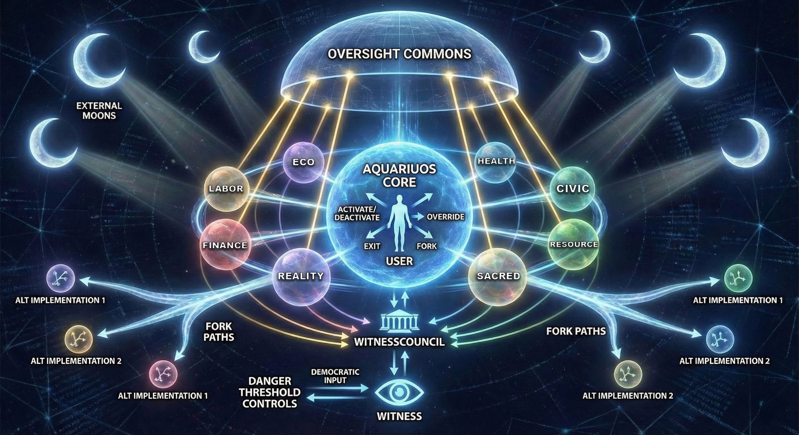

Every living organism requires an immune system. Without one, even the most minor infection can spread unchecked until the whole body collapses. This diagram shows how AquariuOS actively defends itself against capture, corruption, and coordinated manipulation.

The Living Immune System · Witness · WitnessCouncil · Lunar Constellation · Fork Paths · Click to expand
The most important thing to understand about this diagram is what The Witness cannot do. It has zero executive power. It cannot veto, enforce, ban, or override. Every flag it raises is logged with its reasoning and subject to calibration review. If it drifts — if its predictions become poorly calibrated — its mathematical weight in the system drops automatically.
This is not a coincidence of design. It is the load-bearing constraint. A system that watches without the power to act is a witness. A system that watches and acts is a ruler. AquariuOS is built on the distinction between the two.
The Lunar Constellation exists for the same reason: not to give the system more oversight, but to ensure that oversight itself is observed. Every layer that watches is itself watched. The cryptographic infrastructure ensures that mutual observation is verifiable, not merely promised.
{kind=link}